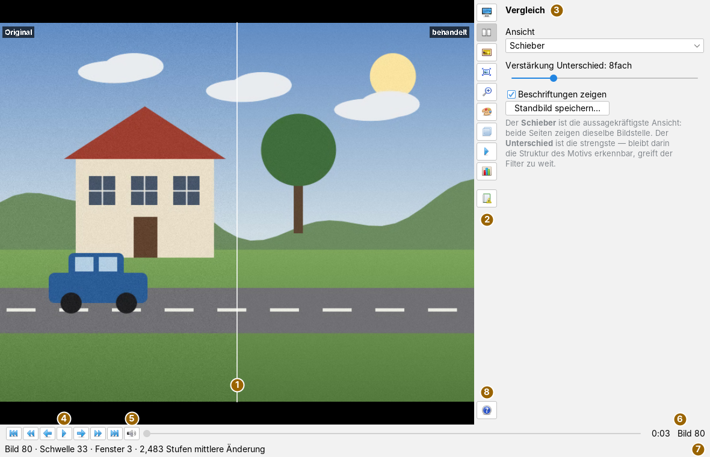
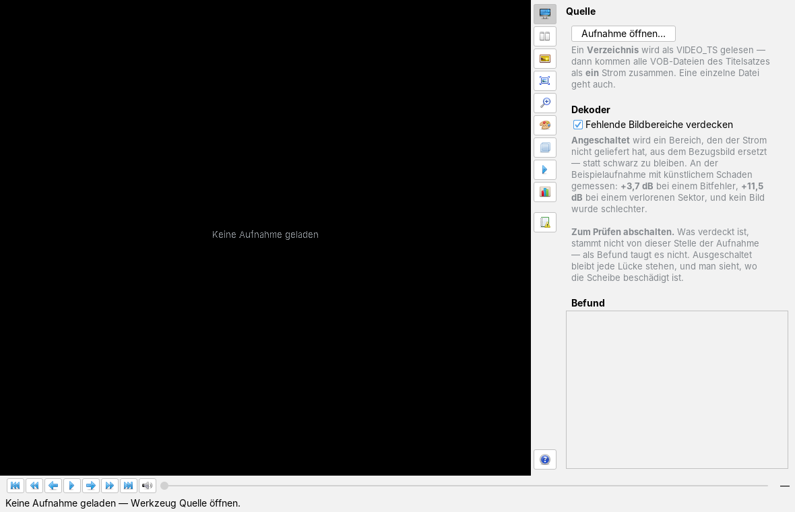
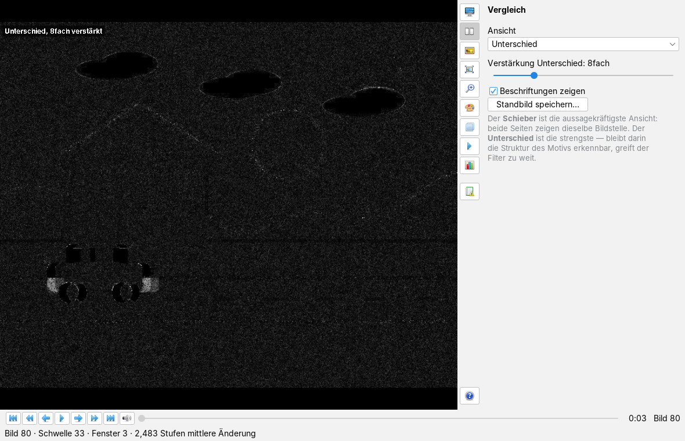
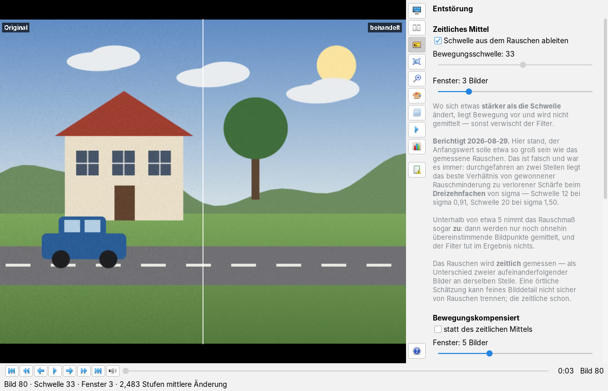
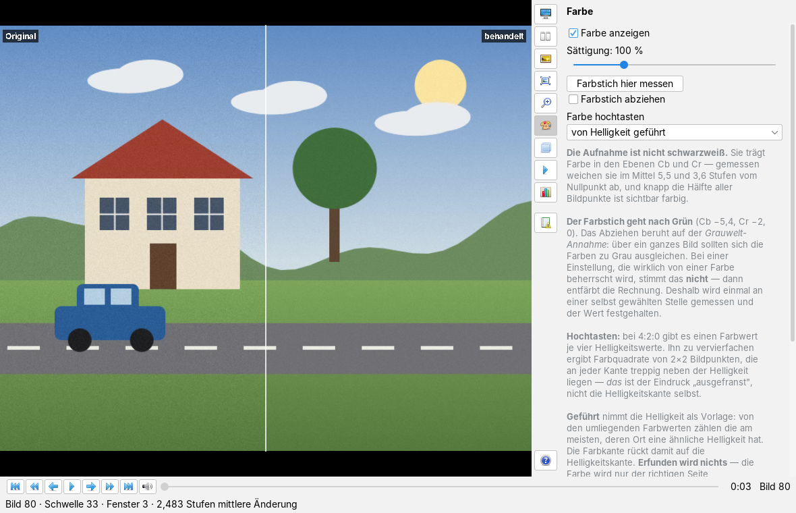
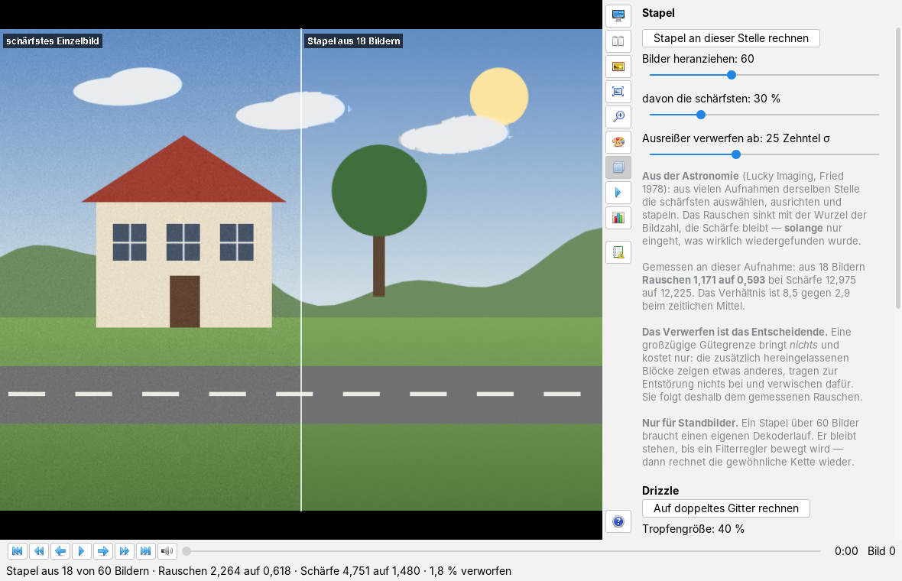

Videoforensik bedienen
Bedienseite, Stand 07.10.2026. Wie man eine Aufnahme öffnet, Original und Behandlung vergleicht, entstört, entschränkt, schärft, die Farbe einstellt, Bilder stapelt, misst, Belege speichert und den Ton abhört; dazu die Kommandozeilenwerkzeuge Steckbrief und VideoRestore. Die Bilder sind Bildschirmfotos der App mit frei erfundenem Testmaterial: eine gezeichnete Straßenszene mit Haus, Baum und Wolken, in die ab Bild 62 ein Wagen fährt, als MPEG-1-Bildstrom mit 100 Bildern zu 720 × 576 Bildpunkten und künstlichem Rauschen.
Das Fenster
Die App öffnet man im Menü Anwendungen mit Videoforensik öffnen… oder mit Alt+Z. Links steht das Bild, rechts die schmale senkrechte Werkzeugleiste mit den Karten, unten die Abspielleiste und darunter die Meldezeile.

Die Ansicht zeigt immer ein Bildpaar derselben Stelle: links, was der Dekoder geliefert hat (Original), rechts dasselbe Bild nach der eingestellten Filterkette (behandelt). Wie beide gegenübergestellt werden, wählt die Karte Vergleich. Das Bild wird mit seinem Seitenverhältnis eingepasst; sind die Bildpunkte nicht quadratisch (etwa 1,067 zu 1 bei PAL 4:3), wird es entzerrt.
Jeder Knopf der Leiste klappt seine Karte rechts daneben auf, ein zweiter Klick auf denselben Knopf klappt sie wieder ein; dann steht dem Bild die ganze Breite zur Verfügung. Die Karten sind 350 Bildpunkte breit und rollen senkrecht, wenn ihr Inhalt länger ist. Alle Regler wirken sofort, es gibt kein Übernehmen; jeder Regler zeigt seinen Zahlenwert in der Beschriftung. Unter jedem Einstellblock steht ein grauer Hinweis, der erklärt, wofür die Einstellung gut ist und was sie kostet.

Die Werkzeugleiste
Die Knöpfe tragen nur Symbole; ihr Name steht im Tooltip und als Überschrift der Karte. Die zehn Kartenknöpfe schließen einander aus: Es ist immer höchstens eine Karte offen. Der Hilfeknopf sitzt am unteren Ende und öffnet keine Karte.
| Symbol | Tooltip | Was geschieht |
|---|---|---|
| Quelle | Aufnahme öffnen, Fehlerverdeckung des Dekoders, Befund der geladenen Aufnahme (Aufnahme öffnen). | |
 | Vergleich | Art der Gegenüberstellung, Verstärkung des Unterschieds, Beschriftungen, Standbild speichern (Vergleichen, Belege). |
| Entstörung | Zeitliches Mittel mit Bewegungsschwelle, bewegungskompensiertes Mittel, Kachelentstörung (Entstören). | |
| Entschränkung | Halbbilder verschränkten Materials zusammenführen (Entschränken und schärfen). | |
| Schärfung | Entfaltung gegen Unschärfe (Entschränken und schärfen). | |
 | Farbe | Farbe an oder aus, Sättigung, Farbstich, Hochtasten der Farbebenen (Farbe). |
| Stapel | Die schärfsten Bilder einer Stelle stapeln; Drizzle auf doppeltes Gitter (Stapeln und Drizzle). | |
 | Wiedergabe | Abspielen und Anhalten, mit einem Hinweis zum Vorlauf (Abspielen und springen). |
 | Messung | Rauschen, Schärfe und Blockmaß vor und nach der Behandlung (Messen). |
 | Protokoll | Die Befunde beim Laden: Bildstrom, Datenträger, Tonspuren (Protokoll). |
 | Hilfe: Bedienseite in der Doku-App | Holt die Doku-App nach vorn und zeigt dort diese Bedienseite, wie F1. Die Meldezeile sagt Die Bedienseite steht in der Doku-App. |
Die Abspielleiste unter dem Bild trägt ebenfalls nur Symbole:
| Symbol | Tooltip | Was geschieht |
|---|---|---|
| An den Anfang | springt zu Bild 0. | |
| 10 Sekunden zurück | springt um zehn Sekunden zurück, gerechnet mit der Bildrate der Aufnahme. | |
| Ein Bild zurück | ein Bild zurück. | |
| Abspielen | startet die Wiedergabe ab der gezeigten Stelle; während sie läuft, heißt der Knopf Anhalten . |
| Ein Bild vor | ein Bild vor. | |
| 10 Sekunden vor | springt um zehn Sekunden vor. | |
| Ans Ende | springt zum letzten Bild — nur, wenn die Gesamtzahl der Bilder bekannt ist (siehe unten). | |
| Tonoptionen: Spur, Mischer, Gleichlauf, Auszug | öffnet das Tonfenster (Ton). |
Aufnahme öffnen
- Die Karte Quelle öffnen und Aufnahme öffnen… drücken.
- Im Dateidialog eine Datei oder ein Verzeichnis wählen (siehe Tabelle).
- Die App liest den Anfang der Aufnahme — die ersten 64 Bilder —, misst daran das Rauschen, setzt die Bewegungsschwelle und zeigt Bild 0. Die Meldezeile nennt Bildnummer, Schwelle, Fenster und die mittlere Änderung durch den Filter in Graustufen.
- Im Feld Befund der Karte steht, was gelesen wurde: Dateiname, Bildgröße, Bildpunktverhältnis und Bildrate, die Zahl der Bilder, MPEG-1 oder MPEG-2, der erste Zeitcode und gegebenenfalls Benutzerdaten aus dem Strom.
| Gewählt | Was gelesen wird |
|---|---|
ein Verzeichnis mit einem Unterverzeichnis VIDEO_TS | dieses VIDEO_TS; die Meldezeile sagt VIDEO_TS im gewählten Verzeichnis gefunden. |
ein Verzeichnis (etwa VIDEO_TS selbst) | alle VOB-Dateien des ersten Titelsatzes als ein Strom; Bild und Ton werden dabei getrennt |
eine .vob-, .ifo- oder .bup-Datei | das Verzeichnis, in dem sie liegt — ein Titel liegt ohnehin in mehreren VOB-Dateien zu höchstens einem Gibibyte |
eine .iso-Datei | nichts: Ein ISO-Abbild lässt sich nicht unmittelbar lesen — bitte einbinden und das VIDEO_TS-Verzeichnis wählen. Für ein Abbild gibt es den Steckbrief. |
| jede andere Datei | als roher MPEG-Bildstrom, etwa .m2v |
Wie lang die Aufnahme ist, steht nach dem Öffnen nur bei einem VIDEO_TS fest: Die App liest die Spieldauer aus der Datei VTS_01_0.IFO und rechnet sie mit der Bildrate in eine Bildzahl um. Dann zeigt die Abspielleiste Bild n von m, der Stellenregler ist bedienbar, und Ans Ende wirkt. Bei einem rohen Bildstrom bleibt die Gesamtzahl offen; die Leiste zeigt nur Bild n, der Regler bleibt gesperrt, und der Befund sagt 64 Bilder angelesen (Gesamtzahl noch offen).
Fehlende Bildbereiche verdecken (voreingestellt an) lässt den Dekoder Bereiche, die der Strom nicht geliefert hat, aus dem Bezugsbild ersetzen, statt sie schwarz zu lassen. Wer den Haken umsetzt, lädt die Aufnahme neu. Für einen Befund gehört er aus: Was verdeckt ist, stammt nicht von dieser Stelle der Aufnahme, und ausgeschaltet sieht man, wo die Scheibe beschädigt ist. Wie viele Makroblöcke verdeckt wurden, steht im Protokoll.
Vergleichen

Die Karte Vergleich wählt unter Ansicht eine von fünf Arten:
| Ansicht | Was zu sehen ist |
|---|---|
| Schieber | ein Bild, links der Trennlinie das Original, rechts die Behandlung. Die Linie zieht man mit gedrückter Maustaste; ein Klick setzt sie an die Stelle. Beide Seiten zeigen dieselbe Bildstelle. |
| Nebeneinander | linke Bildhälfte aus dem Original, rechte aus der Behandlung, an fester Mitte. |
| Nur Original | nur das Original. |
| Nur behandelt | nur die Behandlung. |
| Unterschied | der Betrag des Unterschieds der Helligkeit, mit Verstärkung Unterschied (1- bis 32fach, Vorgabe 8fach) vervielfacht. |
Beschriftungen zeigen schaltet die Marken in den Bildecken: Original und behandelt, nach einem Stapel schärfstes Einzelbild und Stapel aus n Bildern, in der Ansicht Unterschied die Verstärkung. Der Unterschied ist die strengste Ansicht: Bleibt darin die Struktur des Motivs erkennbar, greift der Filter zu weit. Ein guter Entstörer ändert wenig, deshalb wäre das Unterschiedsbild ohne Verstärkung fast schwarz.
Abspielen und springen
Die Knöpfe der Abspielleiste springen um ein Bild, um zehn Sekunden oder an Anfang und Ende; ist die Gesamtzahl bekannt, springt auch der Stellenregler. Rechts daneben stehen die Zeit (Minuten und Sekunden, bei bekannter Länge auch die Gesamtzeit) und die Bildnummer. Die Karte Wiedergabe trägt denselben Knopf Abspielen/Anhalten noch einmal.
Ein Bild mitten in einer Aufnahme gibt es nicht für sich: Es hängt an seinen Bezugsbildern. Liegt eine Stelle nicht mehr im Vorrat der letzten 64 Bilder, liest die App sie im Hintergrund nach (Suche Bild n …). Bei einem VIDEO_TS mit bekannter Länge springt sie dafür ab Bild 400 über einen geschätzten Einstiegssektor, sonst dekodiert sie von vorn; die Oberfläche bleibt dabei bedienbar, und ein neuer Sprung löst den alten ab.
Die Wiedergabe läuft ab der gezeigten Stelle mit der Bildrate der Aufnahme und durch dieselbe Filterkette. Sie füllt zuerst eine Sekunde Vorlauf und startet dann die Uhr. Die Meldezeile zählt Bildnummer und Zeit mit und nennt ausgelassene Bilder, wenn der Rechner nicht mitkommt. Während der Wiedergabe tastet die Farbe linear hoch statt geführt (siehe Farbe). Ein Sprung während der Wiedergabe hält sie an und baut sie an der neuen Stelle neu auf. Bei einem VIDEO_TS läuft der Ton mit (siehe Ton).
Entstören

Die Karte Entstörung hat drei Abschnitte.
Zeitliches Mittel (immer in der Kette, solange nicht das bewegungskompensierte gewählt ist): Jeder Bildpunkt wird über Fenster aufeinanderfolgende Bilder gemittelt (2 bis 7, Vorgabe 3) — aber nur dort, wo er sich um weniger als die Bewegungsschwelle (0 bis 60 Graustufen) ändert. Wo er sich stärker ändert, liegt Bewegung vor, und es wird nicht gemittelt. Mit Schwelle aus dem Rauschen ableiten (voreingestellt an) misst die App beim Laden das Rauschen zeitlich, als Unterschied aufeinanderfolgender Bilder an derselben Stelle, gemittelt über acht Bildpaare, und setzt die Schwelle auf das Dreizehnfache der Streuung; der Regler ist dann gesperrt, die Meldezeile sagt Rauschen sigma … gemessen — Bewegungsschwelle n. Nimmt man den Haken heraus, stellt man die Schwelle von Hand; setzt man ihn wieder, wird an der gezeigten Stelle neu gemessen.
Bewegungskompensiert: Mit statt des zeitlichen Mittels sucht der Filter zuerst, wohin ein Bildausschnitt gewandert ist, und mittelt längs dieser Bewegung, über ein eigenes Fenster (3 bis 9 Bilder, Vorgabe 5) und eine Suchweite (2 bis 24 Bildpunkte, Vorgabe 12). Es ersetzt das zeitliche Mittel, beide zugleich laufen nie; die Bewegungsschwelle gilt für beide.
Kachelentstörung: mit anwenden glättet zusätzlich die Blockgrenzen der Kompression, mit einstellbarer Stärke (0 bis 100 %, Vorgabe 50 %). Nur anwenden, wenn das Blockmaß der Messung es rechtfertigt.
Die Filter laufen in fester Reihenfolge: Entschränkung, dann das zeitliche oder das bewegungskompensierte Mittel, dann Kachelentstörung, dann Entfaltung. Jeder Regler rechnet die gezeigte Stelle sofort neu.
Entschränken und schärfen
Entschränkung: Entschränkung anwenden führt die beiden Halbbilder verschränkten Materials zusammen, mit einer Toleranz (1 bis 40 Stufen, Vorgabe 8) und der Halbbildfolge oberes Halbbild zuerst (voreingestellt an). Nur bei verschränktem Material; bei fortschreitendem schadet sie. Sie ist zu langsam für die Wiedergabe und ein Werkzeug für das Standbild.
Schärfung: Entfaltung anwenden rechnet eine angenommene Unschärfe heraus. Streuung ist die Breite des Verwischungskerns in Zehntel Bildpunkt (2 bis 40, Vorgabe 10, also 1,0 Bildpunkte), Schritte die Zahl der Durchgänge (1 bis 12, Vorgabe 4). Die Entfaltung verstärkt Rauschen; Entstörung und Entfaltung sollte man getrennt beurteilen.
Farbe

Die Filter arbeiten auf der Helligkeit. Gezeigt wird die behandelte Helligkeit mit den unbehandelten Farbebenen desselben Bildes. Die Karte Farbe stellt nur die Anzeige ein und rechnet die Filterkette nicht neu:
- Farbe anzeigen (an): aus, und das Bild ist grau.
- Sättigung 0 bis 400 %, Vorgabe 100 %.
- Farbstich hier messen mittelt Cb und Cr über das gezeigte Bild, hält den Abstand vom Nullpunkt fest und zieht ihn sofort ab (Grauwelt-Annahme); die Meldezeile nennt die Werte. Der Haken Farbstich abziehen ist danach gesetzt und schaltet das Abziehen des festgehaltenen Werts an und aus. Gemessen wird einmal, an einer selbst gewählten Stelle — bei einer Einstellung, die wirklich von einer Farbe beherrscht wird, würde die Rechnung entfärben.
- Farbe hochtasten: wiederholen, linear oder von Helligkeit geführt (Vorgabe). Bei 4:2:0 gibt es einen Farbwert je vier Helligkeitswerte; geführt rückt die Farbkante auf die Helligkeitskante. Während der Wiedergabe gilt statt geführt selbsttätig linear.
Stapeln und Drizzle

- An die gewünschte Stelle springen und die Karte Stapel öffnen.
- Bilder heranziehen (10 bis 150, Vorgabe 60), davon die schärfsten (10 bis 100 %, Vorgabe 30 %) und Ausreißer verwerfen ab (10 bis 50 Zehntel der Streuung, Vorgabe 25) einstellen.
- Stapel an dieser Stelle rechnen drücken. Die App dekodiert die Bilder ab der Stelle in einem eigenen Lauf im Hintergrund (Stapelt n Bilder ab m …), wählt die schärfsten aus, richtet sie aus und stapelt sie.
- Das Ergebnis tritt an die Stelle der behandelten Seite, links steht das schärfste der herangezogenen Einzelbilder; die Marken sagen das. Die Meldezeile nennt, wie viele Bilder eingingen, Rauschen und Schärfe vorher und nachher und den Anteil verworfener Werte.
Der Stapel bleibt stehen, bis ein Filterregler bewegt oder die Stelle gewechselt wird; dann rechnet wieder die gewöhnliche Kette. Ein zweiter Stapel startet erst, wenn der erste fertig ist.
Drizzle: Auf doppeltes Gitter rechnen verteilt die Bildpunkte derselben herangezogenen Bilder (Zahl aus Bilder heranziehen, mindestens drei) als verkleinerte Tropfen auf ein doppelt so feines Gitter. Tropfengröße 15 bis 100 %, Vorgabe 40 %. Das Ergebnis ist doppelt so groß wie die Aufnahme und erscheint deshalb nicht in der Ansicht: Es wird als Graubild drizzle_<Quelle>_<Bildnummer>.png neben die Quelle geschrieben, ohne Rückfrage; die Meldezeile nennt Größe, Anteil der Löcher, Beiträge je Zelle, Schärfe, Rauschen und den Dateinamen.
Messen
Diese Stelle messen in der Karte Messung misst das gezeigte Bildpaar: für das Original (wie aufgenommen) und die Behandlung jeweils Rauschen, Schärfe und Blockmaß, dazu ein Urteil, das Rauschminderung und Schärfeverlust gegenüberstellt, und einen Vorschlag Schwelle. Ab einem Blockmaß über 1,6 folgt ein Hinweis auf sichtbare Blockbildung. Das Urteil steht auch in der Meldezeile. Erst das Paar aus Rauschminderung und Schärfeverlust erlaubt ein Urteil: Sinkt die Schärfe ähnlich stark wie das Rauschen, hat der Filter verwischt.
Belege speichern
- Die gewünschte Ansicht einstellen (in der Karte Vergleich).
- Standbild speichern… drücken. Der Dateidialog schlägt
<Quelle>_<Bildnummer, sechsstellig>_<Ansicht>.pngvor, etwascene01_000080_schieber.png. - Gespeichert wird ein PNG in voller Auflösung der Aufnahme, nicht des Fensters, entzerrt nach dem Bildpunktverhältnis, in derselben Ansicht und Farbe wie auf dem Schirm und immer mit den Beschriftungen, auch wenn sie auf dem Schirm ausgeblendet sind. Beim Schieber liegt die Trennlinie im Beleg immer in der Mitte.
Unter dem Bild steht eine Fußzeile: Quelle, Bildnummer, Zeitstelle und Ansicht, darunter die Behandlung und Datum und Uhrzeit. Als Behandlung steht dort das zeitliche oder das bewegungskompensierte Mittel mit Schwelle und Fenster, davor die Entschränkung, dahinter Kachelentstörung und Entfaltung, soweit sie mitlaufen; nach einem Stapel stattdessen der Stapel mit Bildzahl, Anteil und Ausreißergrenze. Ein falsch beschrifteter Beleg ist schlimmer als keiner.
Ton
Den Ton gibt es bei einem VIDEO_TS: Beim Laden sucht die App im Anfang der Aufnahme die Tonspuren, nennt sie im Protokoll und wählt die erste MPEG-Spur. Der Lautsprecherknopf der Abspielleiste öffnet das Tonfenster, ein eigenes Fenster neben dem Hauptfenster, das offen bleiben kann:
- Tonspur: Auswahl der Spur. Dekodiert wird MPEG-1 Layer II; AC-3, DTS und LPCM werden erkannt und benannt, aber nicht wiedergegeben.
- Aussteuerung: Spitze (heller Strich) und Effektivwert (Balken) in dBFS, gemessen vor dem Lautstärkeregler; über −1 dBFS wird es rot.
- Mischer: Lautstärke 0 bis 200 %, Balance, Kanäle (Stereo, Mono, nur links, nur rechts, Seiten tauschen), Stumm, Ton beim Abspielen mitlaufen lassen.
- Gleichlauf: Bild und Ton liegen im Programmstrom nicht gleichzeitig. Versatz aus den Zeitstempeln übernehmen gleicht das aus den Zeitstempeln beider Ströme aus; Ton von Hand verschieben (−1000 bis +1000 ms, positiv heißt Ton später) wirkt erst mit Verschiebung übernehmen.
- Auszug: Als WAV sichern… fragt, wie viele Sekunden ab der gezeigten Stelle (Vorgabe 30, höchstens 3600), schlägt
ton_<Bildnummer>.wavvor und schreibt 16-Bit-PCM so, wie der Mischer ausgibt.
Protokoll
Die Karte Protokoll listet die Befunde, die beim Laden gesammelt wurden: die Kopfangaben des Bildstroms, ob es MPEG-1 ist, abgewiesene Slices, verdeckte Makroblöcke, Fehlermarken im Strom, gebrochene Verbindungen zwischen Bildgruppen, Benutzer-, Anzeige- und Urheberangaben, wiederholte Halbbilder (Filmmaterial), bei einem VIDEO_TS die Befunde zu VOB- und IFO-Dateien und die gefundenen Tonspuren. Ein Zeichen vor der Zeile, etwa !, markiert, was zu beachten ist. Hat die Aufnahme nichts zu melden, steht dort Keine Befunde.
Was gespeichert wird
Beim Sichern des Arbeitsbereichs merkt sich die App, sofern eine Aufnahme geladen ist: den Pfad der Quelle, die Bildnummer, die Ansicht, die Verstärkung des Unterschieds, Bewegungsschwelle und Fenster des zeitlichen Mittels, Kachelentstörung (an/aus, Stärke), Entfaltung (an/aus, Streuung, Schritte), Entschränkung (an/aus, Halbbildfolge) und die Fehlerverdeckung. Beim nächsten Start stellt sie die Werte samt Reglern zurück, lädt die Quelle, wenn es sie noch gibt, und springt an die Stelle. Weil die Schwellenautomatik dabei an ist, misst sie die Schwelle beim Laden neu.
Nicht gesichert werden die Einstellungen der Karten Farbe und Stapel, des bewegungskompensierten Mittels, die Toleranz der Entschränkung, der Schalter der Schwellenautomatik und die Toneinstellungen. Belege, Drizzle-Bilder und WAV-Auszüge sind eigene Dateien.
Kommandozeile
Die Werkzeuge laufen ohne Oberfläche, mit den bin-Ordnern der App und der Framework-Module im Klassenpfad; im Folgenden steht dafür -cp bin.
Steckbrief: Bestandsaufnahme vor der Restaurierung
java -cp bin envisionz.apps.forensik.Steckbrief <abbild.iso | verzeichnis | film.mpg>
[--quelle VHS|S_VHS|VIDEO8|HI8|BETAMAX|DV|DIGITAL] [--plan]Der Steckbrief liest nur und dekodiert nichts. Er gibt die Befunde nach Bereichen geordnet aus (Allgemein, Datenträger, Dateisystem, DVD, Behälter, Videostrom, Ton) und zählt am Ende Fallen, zu beachtende Punkte und Lücken im Werkzeug. Danach bestimmt er das Ausgangsmaterial, soweit es der Datenstrom hergibt, und nennt, was offen ist und wie es zu klären wäre; --quelle legt die Art fest. Mit --plan folgt ein vorgeschlagener Bearbeitungsweg mit Einstellwerten je Schritt, gekennzeichnet als notwendig (**), empfohlen (+), optional (o) oder nur nach Entscheidung (!), und als rekonstruierend, schätzend, erzeugend oder messend; nur die rekonstruierenden Schritte liefern belegbare Bildinhalte.
| Eingabe | Was er untersucht |
|---|---|
Abbild (.iso, .img, .bin, .nrg) | Sektorformat, Lesbarkeit, UDF und ISO 9660 und ob beide gleich viele Dateien nennen, die Struktur (DVD-Video, Video-CD, Super-Video-CD), die Titelsatz-IFO und die größte Videodatei |
| Verzeichnis | jede Datei mit Größe, bei VIDEO_TS die Titelsatz-IFO-Dateien, dazu die größte Videodatei |
| Datei | Behälter, Videostrom und Ton |
Von großen Dateien liest er die ersten 24 MB. Ohne Argument druckt er die Aufrufzeile. Der Rückgabewert ist immer 0; das Ergebnis steht in der Ausgabe.
VideoRestore: messen und belegen
java -cp bin cmd.forensik.VideoRestore <strom.m2v | datei.vob | VIDEO_TS> [-o:<verzeichnis>]
[-bild:N[,N...]] [-alle:N] [-schwelle:N] [-fenster:N]
[-ansicht:ART] [-verstaerkung:N] [-verhaeltnis:X] [-messen]Dekodiert den ganzen Strom in einem Durchgang, schickt ihn durch das zeitliche Mittel und schreibt die gewünschten Bilder als Belege, wie Standbild speichern… in der App, mit Fußzeile. Ein Verzeichnis wird als VIDEO_TS gelesen, alle VOB-Dateien des ersten Titelsatzes als ein Strom; eine einzelne Datei wird als Bildstrom gelesen.
| Schalter | Bedeutung | Vorgabe |
|---|---|---|
-o: | Zielverzeichnis der Belege; wird angelegt, wenn geschrieben wird | . |
-bild: | Bildnummern, durch Komma getrennt | keine |
-alle: | jedes N-te Bild (Bildnummer durch N teilbar) | keine |
-schwelle: | Bewegungsschwelle | 12 |
-fenster: | Zahl der gemittelten Bilder | 3 |
-ansicht: | SCHIEBER, NEBENEINANDER, ORIGINAL, BEHANDELT oder UNTERSCHIED | SCHIEBER |
-verstaerkung: | Verstärkung der Ansicht Unterschied | 8 |
-verhaeltnis: | Bildpunktverhältnis, etwa 1.067 für PAL 4:3 | 1.0 |
-messen | nur messen, nichts schreiben | aus |
Rückgabewert 0: gelesen (und geschrieben); 1: Quelle fehlt, ist nicht lesbar oder ergibt kein Bild; 2: Aufrufhilfe oder unbekannter Schalter. Die Ausgabe nennt Strom und Kopfangaben, Dekodier- und Filterzeit je Bild, die geschriebenen Dateien, ob die Kette für die Wiedergabe reicht (beurteilt erst ab 50 Bildern), die mittlere Änderung je Bildpunkt und die Zahl der Belege. Am erfundenen Testmaterial dieser Seite:
$ java -cp bin cmd.forensik.VideoRestore scene01.m2v -o:belege -alle:40 -schwelle:20
Strom scene01.m2v
Angaben 720x576, quadratische Bildpunkte, 25,000 Bilder/s, Datenrate unbegrenzt
Dekodiert 100 Bilder in 2525 ms = 25.25 ms je Bild (1.6fache Echtzeit)
Geschrieben belege/scene01_000000_schieber.png
Geschrieben belege/scene01_000040_schieber.png
Geschrieben belege/scene01_000080_schieber.png
Gefiltert 100 Bilder in 661 ms = 6.61 ms je Bild
Haushalt 40.00 ms je Bild bei 25.000 B/s → 31.86 ms gemessen, reicht für Wiedergabe (1.3fach)
Wirkung 2.429 Stufen mittlere Änderung je Bildpunkt
Standbilder 3Weitere Werkzeuge
Sie nehmen ihre Argumente der Reihe nach. QUELLE ist ein Bildstrom oder ein VIDEO_TS-Verzeichnis; Rückgabewert 2 heißt Aufrufhilfe, 1 zu wenige oder keine Bilder gelesen.
| Aufruf | Zweck |
|---|---|
java -cp bin cmd.forensik.Lupe QUELLE ZIEL BILDNR X Y BREITE HOEHE [ZOOM] | derselbe Ausschnitt aus jeder Fassung, ganzzahlig vergrößert (Vorgabe 3), Bildpunkte als Quadrate |
java -cp bin cmd.forensik.Farbversatz QUELLE [AB-BILD] [BILDER] | misst, ob die Farbe gegen die Helligkeit versetzt ist (Vorgaben 900 und 12) |
java -cp bin cmd.forensik.StapelBeleg QUELLE ZIEL BILDNR [BILDER] [ANTEIL] | beschrifteter Beleg eines Stapels (Vorgaben 60 und 0.3) |
java -cp bin cmd.forensik.DrizzleProbe QUELLE ZIEL BILDNR [BILDER] [TROPFEN] | Drizzle gegen ein hochskaliertes Einzelbild (Vorgaben 30 und 0.6) |
java -cp bin cmd.forensik.TonAuszug QUELLE ZIEL.wav [SEKUNDEN] | Tonspur MPEG-1 Layer II als WAV (Vorgabe 20 Sekunden) |
Tastatur und Maus
Alt+Z öffnet die App, F1 die Doku, wie der Hilfeknopf. In der Ansicht Schieber setzt ein Klick die Trennlinie, Ziehen mit gedrückter Maustaste verschiebt sie; der Mauszeiger zeigt dort einen Doppelpfeil. Die Leistenknöpfe nehmen keinen Tastaturfokus. Weitere Tastenkürzel hat die App nicht.
Grenzen
- Gelesen wird beim
VIDEO_TSnur der erste Titelsatz (VTS_01); ein ISO-Abbild muss vorher eingebunden werden. Der Dekoder ist auf MPEG-2 ausgelegt; MPEG-1 wird gelesen, aber im Protokoll vermerkt. - Die Gesamtlänge kennt die App nur aus der IFO-Datei; bei einem rohen Bildstrom bleibt der Stellenregler gesperrt.
- Entschränkung und Entfaltung sind für die Wiedergabe zu langsam, Stapel und Drizzle rechnen nur an einer Stelle.
- Stapel und schärfstes Einzelbild werden mit den Farbebenen des gezeigten Bildes eingefärbt; wo sich etwas bewegt, passen die Farben deshalb nicht. Für das Urteil über den Stapel ist die graue Darstellung (Farbe anzeigen aus) die ehrlichere.
- Die Befunde im Protokoll, die Kopfangaben im Befund, die Messwerte und die Kanalwahl im Tonfenster formulieren die Framework-Module; sie erscheinen auch in der englischen Oberfläche deutsch.
- Das Tonfenster und die Frage nach der Länge des WAV-Auszugs sind eigene Fenster, keine Karten.
Was die App kann und worauf sie aufbaut, steht in der Übersicht.
Symbole: Fugue Icons von Yusuke Kamiyamane, Lizenz CC BY 3.0.